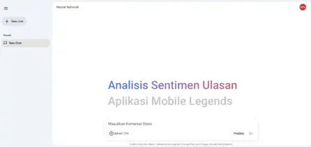
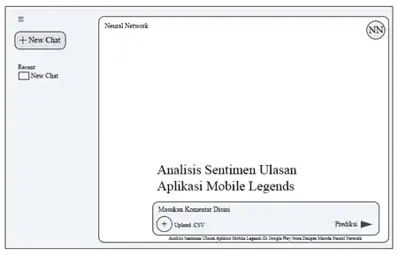
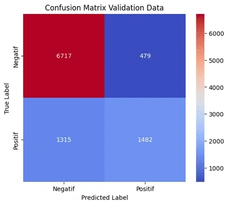
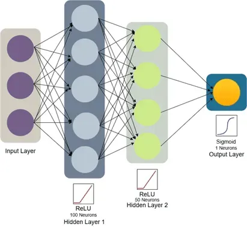
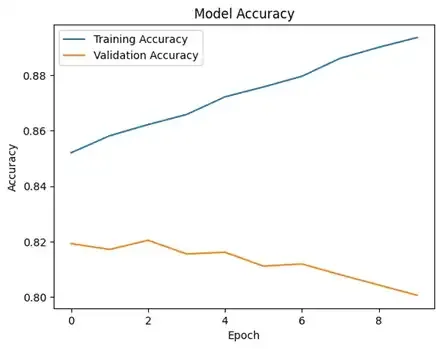
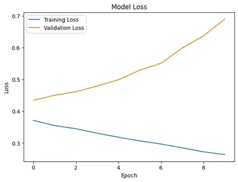

Mobile Legends Sentiment Analysis
An applied NLP project analyzing Indonesian-language Google Play Store reviews for Mobile Legends: Bang Bang. The pipeline uses TF-IDF feature weighting and a Feedforward Neural Network (FFNN) to classify player commentary into positive and negative sentiment categories.


Interactive web application supporting real-time single review testing and batch CSV dataset inference.
The Problem: Noisy Gaming Reviews at Scale
Mobile Legends: Bang Bang maintains a massive player base across Southeast Asia, generating tens of thousands of comments on the Google Play Store every month. These reviews provide direct signals about game balance, server lag, matchmaking issues, and updates.
Manually sifting through that feedback is not practical. On top of the sheer volume, informal Indonesian text is notoriously messy: players blend colloquial slang (bahasa gaul), gaming loanwords (such as nerf, buff, lag, and afk), typographical errors, and shortened spellings.
This project set out to build an end-to-end sentiment classification pipeline tailored to this domain. By collecting roughly 50,000 public reviews, cleaning the text through an Indonesian slang dictionary, computing term weights with TF-IDF, and training a Feedforward Neural Network, the system flags incoming feedback as positive or negative with an associated probability score.
Pipeline & Modeling Workflow
Scraped around 50,000 Indonesian user reviews from the Google Play Store, extracting review text, ratings, and submission dates.
Cleaned raw reviews through multiple steps: lowercasing (case folding), mapping informal gaming slang to root words via a custom lookup dictionary, tokenizing text while stripping punctuation and numbers, filtering out common Indonesian stopwords, and stemming remaining tokens.
Converted processed tokens into numeric vector representations using Term Frequency - Inverse Document Frequency, emphasizing terms that carry strong signal across the review corpus.
Built and trained a multi-layer FFNN using TensorFlow and Keras. The network pairs dense hidden layers with Dropout regularization to curb overfitting on frequent words, leading into a binary sigmoid output layer.
Outputs the predicted class (Positive or Negative) together with a confidence percentage indicating the model's certainty.
Technology Stack
Primary language used for data preparation, text normalization, and model development.
Deep learning framework used to assemble, train, evaluate, and export the neural network.
Dataset handling, tabular restructuring, and array operations during preprocessing.
Text token weighting scheme mapping vocabulary terms to numeric model inputs.
Production web hosting for the user interface (Vercel) coupled with an inference backend (Railway).
Interactive Web Application Features
- Single sentence classification: Enter any Indonesian gaming review to receive real-time positive or negative predictions with confidence percentages.
- Batch dataset processing: Upload a
.csvor.txtfile containing multiple reviews to run batch inference and review a formatted output table. - Conversational UI: A clean chat-style layout that displays query history alongside prediction breakdowns.
- Indonesian gaming slang normalization: Custom dictionary rules handle terms like bocil, noob, ngelag, and common spelling truncations.
- Live API integration: Communicates with an asynchronous prediction server for low-latency scoring.
Screenshots & Evaluation Gallery











Project Metadata
| Category | Machine Learning, Natural Language Processing (NLP) |
| Task | Binary Sentiment Classification (Positive / Negative) |
| Dataset | ~50,000 Google Play Store Reviews |
| Feature Representation | TF-IDF (Term Frequency - Inverse Document Frequency) |
| Model | Feedforward Neural Network (FFNN) with Dropout |
| Frameworks | TensorFlow, Keras, Scikit-learn, Pandas |
| Author | Robbi Rizaldi |
Try the Live Web App
Test custom Indonesian review text directly on the deployed web application or return to the projects showcase: